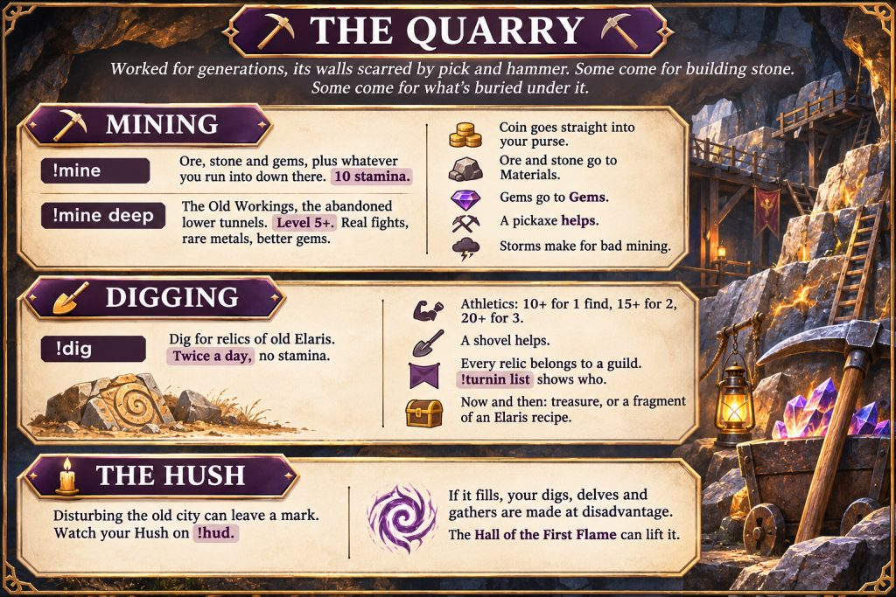

Mining, digging, delving and the Hush
Digging is the everyday way to find relics; delving is the dangerous one. Both can leave you marked by the Hush.

Mining
!mine at the Quarry, 10 stamina (5 when you come up empty). Each run draws one of 141 encounters from alpha983's Mining sheet, reworked for Wickhaven: ore veins, stone, gems, Hand & Hammer crews, lost kobolds, a playful mimic, ambushes. Many ask for a check or a save.
- Coin goes straight into your purse. Ore and stone go to Materials, gems to Gems, potions and scrolls into their bags.
- Failures can cost HP. A few encounters belong to the Unlit and can add Hush.
!mine deep(level 5+) goes into the Old Workings, the abandoned lower tunnels that break into old Elaris. That's where the real fights, platinum, mithral, adamantine, high-value gems and uncut stones are, plus a 10% chance of treasure on a success.- A pickaxe helps; storms hurt.
Digging
!dig, twice a day at the Quarry or a charted Outlands ruin. You roll Athletics:
- 10+ for 1 find, 15+ for 2, 20+ for 3.
- Every success also turns up 1–2 Building Stone, Iron Ore or Copper Ore.
- Finds are relics: mostly common, sometimes uncommon, rarely rare.
- There's a 25% chance of treasure (a gem, potion, scroll or magic item) and a small chance of an Elaris recipe fragment.
- A roll under 8 hurts (1d4). There's a 10% chance per dig of gaining Hush.
Delving
!delve, twice a week, level 5+, in the Hollow Sanctum, the temple under Lowside. A second roll decides how deep you get:
| Depth | Treasure chance | Trap damage | Hush chance |
|---|---|---|---|
| Outer chambers | 40% | 1d6 | 15% |
| Deeper halls | 60% | 2d6 | 25% |
| Sealed sanctum | 90% | 3d6 | 40% |
Relics from a delve are worth double at turn-in. The depth names will change once THE RUINS has been played.
The Hush
The Hush is the mark of the Unlit, a 10-bubble counter shown on !hud. Digging can add 1 (2 on a rare find); delving adds 1–3. At 10, your digs, delves and gathers are all made at disadvantage until it's lifted. See Faiths & the Hush for the three ways to clear it, or eat Founders' Bread to clear 1.